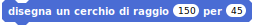
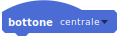

Syntax:
avanza di (valore (~mm))
Avanza della distanza in mm (approssimativi). Se la distanza é negativa il robot procede all'indietro. La velocità approssimativa é di 100mm/s. Se il valore non viene indicato il robot non si ferma
Syntax:
avanza di(distanza (~mm)) con velocità (valore (~mm/s))
Avanza della distanza in mm (approssimativi) con una data velocità (indicativi in mm / s). Se la distanza è negativa, il robot si muove indietro. Se il valore non viene specificato, il robot non si ferma.
Syntax:
Avanza di(distanza) per (valore)
Avanza di un valore indicativo in mm per la durata indicata in secondi.Se la distanza è negativa il robot procede all’indietro.

Syntax:
disegna un cerchio di raggio (valore del raggio) per (valore s
Compie un arco di circonferenza di raggio dato in mm e per i gradi indicati. Se il raggio è maggiore di 0 va in avanti, se minore di zero va indietro. Se l'angolo è > 0 inizia a destra, se < di 0 inizia a sinitra.
Syntax:
Ruota di (angolo) gradi
Ruota sul posto di un angolo in gradi (verso sinistra se maggiore di zero, verso destra se minore di zero) poi si ferma. E’ molto impreciso da cui l’assenza dell’unità di misura.
Syntax:
Ruota di (angolo ) per (durata) secondi
Ruota sul posto di un angolo in gradi per una durata in secondi (verso sinistra se maggiore di 0, verso destra se minore di 0) con la velocità indicata. Se l’angolo non viene indicato il robot non si ferma e continua a girare.
Syntax:
motori [sinistra, destra, tutto] (valore)
Indica la spinta del motore sinistro, del motore destro, di entrambi i motori in valore da 0 à 500
arresta i motori (spinta a 0)
Syntax:
tutti i LED RVB (valore R)(valore V)(valore B)
Accende il colore RVB dei LED della parte superiore e inferiore del robot Thymio
Syntax:
accendi LED quadrante verso [sinitra, destra]
Accendi LED del quadrante verso sinistra o verso destra.
Syntax:
Accendi LED quadrante (led 0)(led 1)(led 2)(led 3)(led 4)(led 5)(led 6)(led 7)
Accende i LED del quadrante indicati da 0 a 7 con intensità 0, 8, 16, 32.
Spegne tutti i LED (tutti tranne i LED di feedback rossi associati automaticamente ai sensori)
Syntax:
colora LED (valore) [sopra, sotto, sopra et sotto]
Accende i LED colorando il robot sulla parte superiore o inferiore o entrambe secondo la codifica colori di Scratch (da 0 à 200) con 0 per il Rosso. Cerchio cromatico mod 198.
Syntax:
cambia colore LED (valore) [sopra, sotto, sopra e sotto]
Modifica il valore del colore dei LED attuali per la parte superiore, inferiore o entrambe secondo la codifica colori di Scratch
Syntax:
registra suono (x)
Registra il suono rx.wav sulla carta rimovibile SD dove x è un numero intero.
Syntax:
Riproduci suono (x)
Riproduci il suono registrato rx.wav sulla carta SD dove x è un numero intero.
Syntax:
inizializza isometria(direzione)(x)(y)
Inizializza la direzione dell’odometro in gradi e coordinate x e y in mm. Questa inizializzazione della posizione è necessaria in Scratch per far corrispondere il Thymio in ScratchX con quello fisico.
Syntax:
LED sensori prossimità (led 1)(led 2)(led 3)(led 4)(led 5)(led 6)(led 7)(led 8)
Accende ciascun LED di feedback dei sensori di prossimità orizzontali con una intensità da 0 (spento) a 32. Ci sono 8 LED di feedback per i sensori. Quello centrale ne ha 2.
Syntax:
LED sensori terreno (led 1)(led 2)
Accende ciascun LED di feedback dei sensori di prossimità del terreno con una intensità da 0 (spento) a 32.
Syntax:
LED bottoni (led 1)(led 2)(led 3)(led 4)
Accende i LED dei tasti con una intensità da 0 (spento) a 32. Lampo di luce. Non resta acceso
Syntax:
LED temperatura (rosso)(blu)
Accende i LED del termometro, blu freddo, rosso caldo, con intensità da 0 (spento) a 32.
Syntax:
LED microfono (valore)
Accende il LED del microfono con intensità da 0 (spento) a 32.
Syntax:
LED RC (valore)
Accende il LED del telecomando con intensità da 0 (spento) a 32.
Syntax:
emetti (valore)
invia un valore di 10 bit attraverso i sensori di prossimità orizzontali in modalità broadcast. Utilizza prox.com.tx
Syntax:
ricezione (valore)
Riconosce un valore intero di 10 bit ricevuto dai sensori di prossimità orizzontali. Usa prox.comm.rx
Ritorna la temperatura in decimi di grado centigrado
Syntax:
misura motori [sinistra, destra]
Restituisce la potenza reale dei motori (non quella indicata programmando), Utile per gestire la derivata dei motori.
Syntax:
inclinazione [beccheggio, rollio, sinistradestra]
Restituisce un valore dell’accelerometro secondo un asse (sinistradestra, da sopra a sotto, davanti-dietro). Se il valore è maggiore di 20 viene rilevato un urto. Da 0 (rotazione di 0°) a 22 (equivale a rotazione di 90°)
Syntax:
sensore orizzontale (numero sensore)
Restituisce il valore rilevato da un sensore di prossimità orizzontale (0 a 5 frontali, 6 e 7 posteriori). Un oggetto è riconosciuto se il valore è superiore a 2000 (è maggiore la luce riflessa se l'oggetto è vicino), non viene rilevato se è inferiore a 1000. Il valore massimo è 5000. Nell’intervallo 0 e 1000 non risulta molto affidabile quanto rilevato dal sensore.

Syntax:
sensore orizzontale (tutto a sinistra, a sinistra, centrale, a destra, tutto a destra, posteriore sinistro, posteriore destro)
Restituisce il valore rilevato da un sensore di prossimità orizzontale (0 a 5 frontali, 6 e 7 posteriori). Un oggetto è riconosciuto se il valore è superiore a 2000 (è maggiore la luce riflessa se l'oggetto è vicino), non viene rilevato se è inferiore a 1000. Il valore massimo è 5000. Nell’intervallo 0 e 1000 non risulta molto affidabile quanto rilevato dal sensore.
Syntax:
sensore terreno (numero sensore)
Restituisce il valore rilevato da un determinato sensore al di sotto del robot, i sensori del terreno (0 quello di sinistra 1 per il destro). Rileva un fondo bianco se il valore è maggiore di circa 450 (intensità della luce riflessa grande se il terreno riflette molto) e nero se il valore è inferiore a circa 400. 950 è il valore massimo
Syntax:
distanza[davanti, dietro, terreno]
Restituisce la distanza da un ostacolo calcolata dai sensori di prossimità orizzontali. Restituisce il valor medio ponderato per la percezione di un oggetto fornito dai sensori anteriori, posteriori o quelli rivolti sotto verso il terreno. Il valore varia tra 0 e 190 (190 se non viene rilevato nulla).
Syntax:
angolo [davanti, dietro, terreno]
Angolo da cui un ostacolo è visto dal robot; calcolato considerando la luce riflessa dall’ostacolo rilevata dai sensori (da 0 aumenta sino ad un massimo di 32 massimo e poi diminuisce fino al lato → 0). Restituisce la posizione angolare utilizzando una media ponderata della luce riflessa da un oggetto dati rilevata dai sensori orizzontali anteriori o posteriori o sensori del terreno. Se l'oggetto è vicino, l'angolo può passare bruscamente 0. Può essere a zero quando non ci sono affatto oggetti di fronte o con
Restituisce una serie di valore dai
sette sensori di prossimità da 0 a 5000 (x7).
Restituisce una serie di valore dai due sensori di prossimità da 0 a 5000 (x2).
Ritorna l’intensità di un suono captata dal microfono con un valore da 1 a 10. Superiore a 2 per rilevare un rumore e distinguerlo dal rumore di fondo.
Syntax:
colora LED[sopra, sotto-sinistra,sotto-destra]
Fissa il colore ai LED superiori, inferiore sinistro e inferiore destro utilizzando il codice colori di Scratch da 0 a 197.
Syntax:
odometro[direzione,x,y]
Restituisce l’angolo o la distanza x, y relativa all’inizializzazione in mm (10 corrisponde a 50 mm)
Rumore captato. Battito di mani o schiocco sonoro di una certa intensità.
Restituisce un valor medio dei tre assi dell’accelerometro per indicare un urto ricevuto.
Syntax:
suona suono su scheda SD(valore)
Emetti il suono px.wav registrato sulla carta rimovibile SD dove x è un numero intero.
Syntax:
oggetto rilevato [difronte, dietro, terreno]
Rilevato un oggetto di fronte, posteriormente o sotto. Ritorna un valore VERO se uno dei sensori restituisce un valore maggiore di 0.
Syntax:
suona suono thymio [valore]
Emette il suono di sistema (da 0 a 7).
Syntax:
suona nota (frequenza) per (duranta) secondi
Suona la nota di frequenza indicata per una durata espressa in secondi.

Syntax:
ruota di (angolo) con velocità (valore (~mm/s))
Ruota sul posto di un angolo in gradi (verso sinistra se maggiore di 0, verso destra se minore di 0) con la velocità indicata. Se l’angolo non viene indicato il robot non si ferma e continua a girare.

Syntax:
bottone [centrale, davanti, dietro, sinistra, destra]
Indica se il bottone indicato è stato premuto restituendo un 0 oppure un 1 (falso,vero)